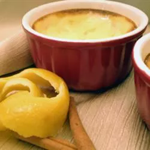

This sweet, cinnamon-lemon custard is Chile's answer to the creme brulee.
Preheat oven to 350 degrees F (175 degrees C).
Pour the milk into a saucepan along with the lemon zest and cinnamon sticks. Bring to a simmer over medium-high heat, then reduce heat to low, and cook for 5 minutes. Turn heat off, and allow to steep for 15 minutes.
Gently beat the eggs and sugar together until the sugar has dissolved. Slowly beat in 1 cup of the hot milk, a little at a time, until it has been incorporated. Stir the egg mixture back into the hot milk, pour in the pisco, and mix until well combined.
Pour the custard through a fine mesh sieve into a 2-quart ceramic casserole dish to remove the lemon zest and cinnamon. Bake in preheated oven until set, and browned on top, about 30 minutes. Chill before serving.
258
9g
25g
10g